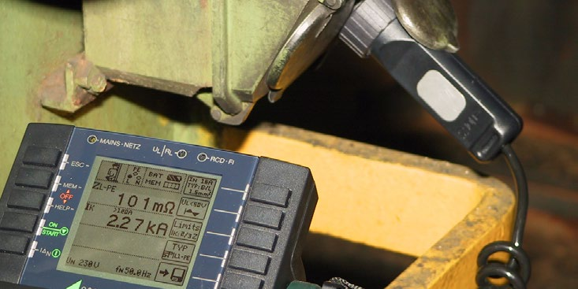

Diese DGUV Information gibt dem Unternehmer Hinweise zur Organisation wiederkehrender Prüfungen
die sich im Eigentum des Unternehmens befinden, angemietet oder geliehen sind.
Dieses gilt auch für die an der Arbeitsstelle/im Unternehmen geduldeten Privatgeräte der Beschäftigten, wie z. B. Kaffeemaschinen, Wasserkocher oder Rundfunkgeräte.
In bestimmten Bereichen sind weitergehende Anforderungen aus Verordnungen, landesbaurechtlichen Regelungen, Vertragsbedingungen der Sachversicherer, Normen und anderen Regelwerken zu beachten, auf die in dieser Schrift nicht eingegangen werden kann. Dies gilt beispielsweise für:
